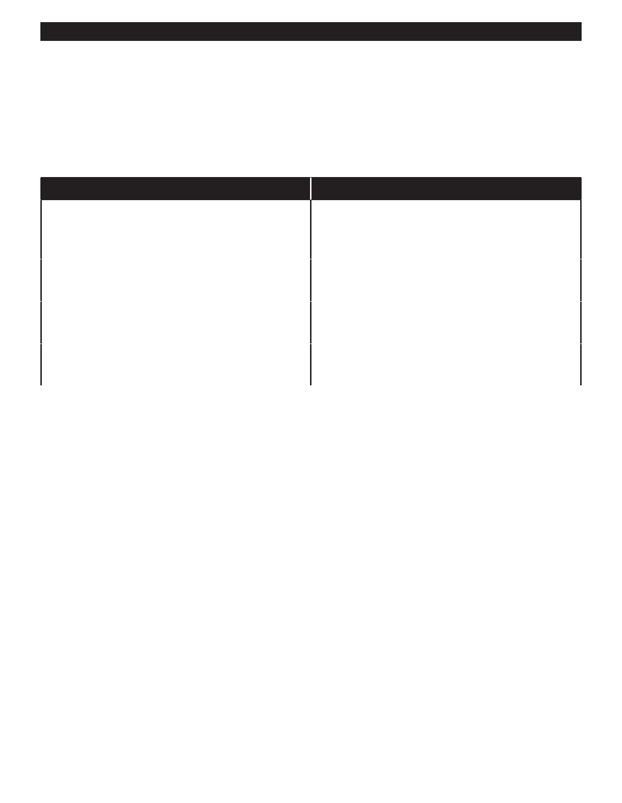

PA RT I C I PA N T R E S O U R C E G U I D E
Common Receptacle Problems and Solutions
Just like switches, receptacles are simply designed, so there is little to go wrong. But
receptacles can crack or develop shorts. Or they may not hold plugs well.
Fortunately, receptacles are inexpensive and easy to test and replace.
Problem
Solution(s)
Circuit breaker keeps “tripping” or fuse burns out
Replace problem plug-in appliance.
repeatedly
Move plug-in appliances to another circuit.
Test receptacle and replace, if needed. (Pages 49-52)
Light fixture or plug-in appliance does not work.
Replace lamp, bulb, or appliance.
Test receptacle and replace, if needed. (Pages 49-52)
Plugs fall or hang out of receptacle.
Replace problem plug-in appliance.
Replace receptacle. (Pages 51-52)
Receptacle is warm, buzzes, or sparks when plugs
Move plug-in appliances to another circuit.
are inserted or pulled out.
Replace the receptacle. (Pages 51-52)
Notes:
48